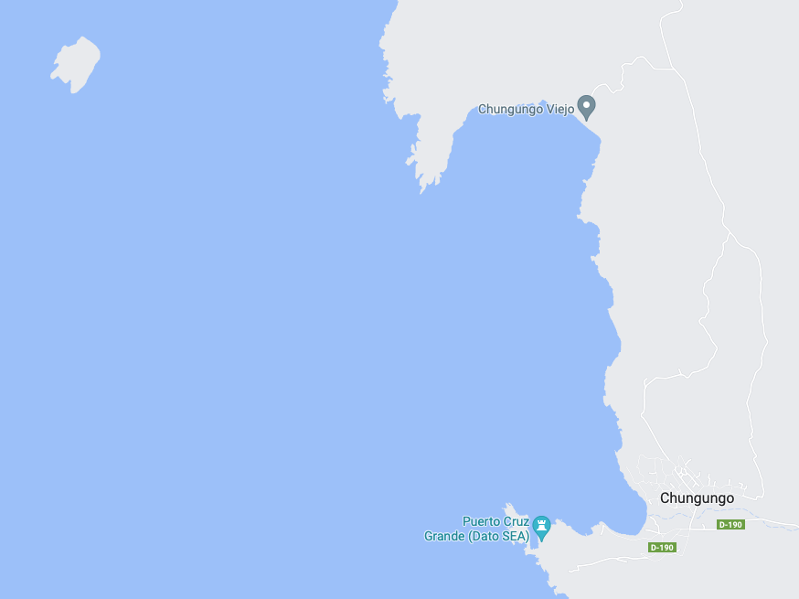
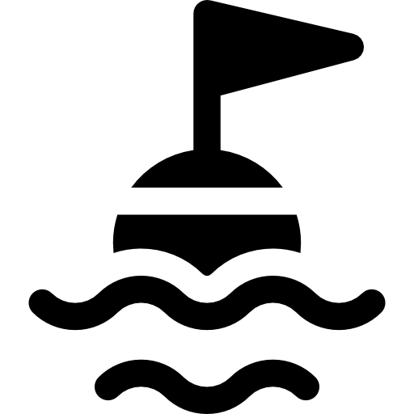

Gertha

Pudu
Sonido en vivo
Selecciona una estación para comenzar
Estación Gertha
Sonido en vivo
https://octopusk.acusticamarina.cl:8443/gertharpi2.mp3
Estación Pudú
Sonido en vivo
https://octopusk.acusticamarina.cl:8443/pudurpi1.mp3